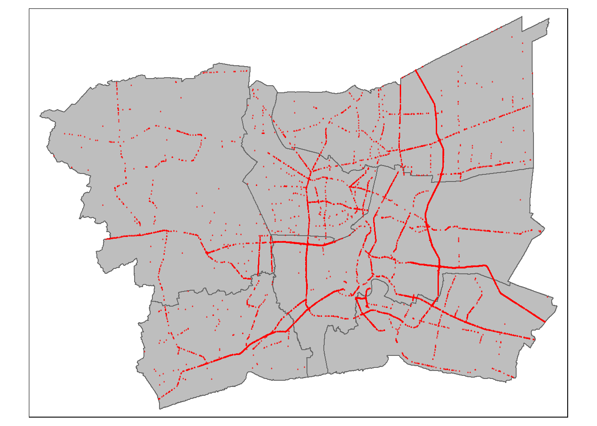
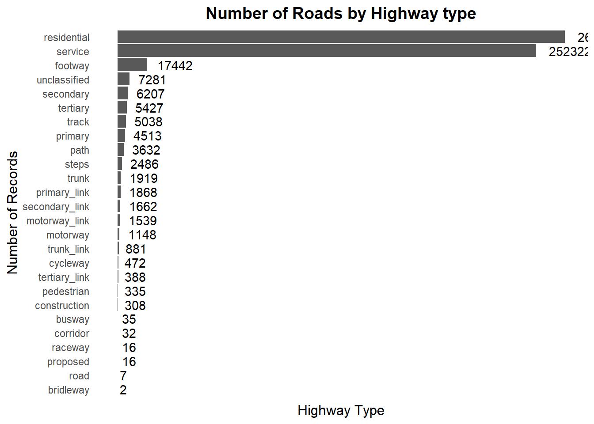
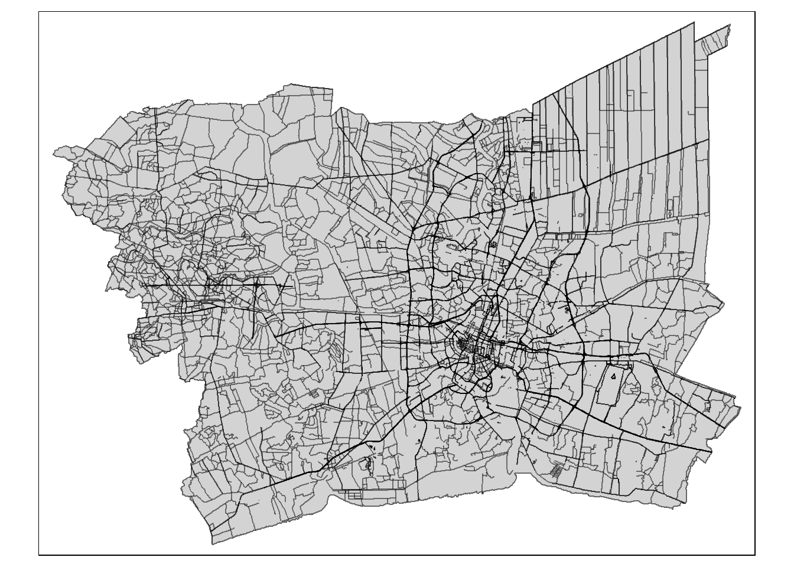
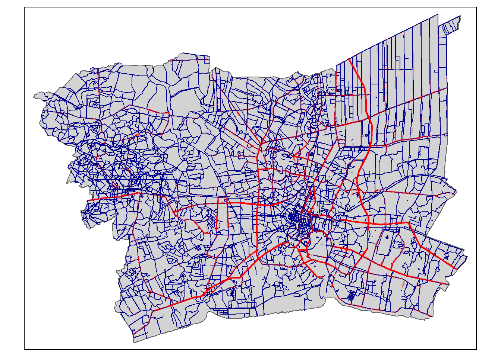

pacman::p_load(sf, spNetwork, tmap, tidyverse)Geospatial Analysis for Public Good: A Data-driven Perspective on Road Traffic Accidents in the Bangkok Metropolitan Region
(Summary here. WIP)
A. Getting Started
A.1 Background
Road traffic accidents account for 1.19million deaths and up to 50 million non-fatal injuries according to a report by the WHO last year.
The same report identifies major risk groups: low- and middle-income countries, (esp in Africa and Europe) the working population, and males. It also identifies some key risk factors which include human error, speeding, driving under the influence of alcohol, distracted driving, unsafe road infrastructure, unsafe vehicles, and law enforcement. Most of the factors identified are behavioral in nature but do not discount that other factors may also contribute to a higher risk of occurrence.
Within Southeast Asia, Thailand has ranked the highest in terms of incidence of road traffic accidents with an average number of of 20,000 deaths a year or 56 a day. The country has also seen an increase in the number of accidents from 2014 to 2021. A large 19% of these accidents occurred in national highways, and the chances of encountering an accident-prone zone was found to be 66%.
A.2 Objectives
This study aims to take a deeper look into the road accidents in Thailand, focusing on the Bangkok Metropolitan Region (BMR) which contains the capital Bangkok, and five neighboring provinces. (Nonthaburi, Nakhon Pathom, Pathum Thani, Samut Prakan, Samut Sakhon)
As most literature has focused on behavioral and environmental factors, the study will focus on identifying spatiotemporal factors influencing the occurrence of road accidents in BMR. At the minimum, the study deliverables include the following:
Visualization of spatiotemporal dynamics of road traffic accidents in BMR
Detailed spatial analysis of road traffic accidents in BMR
Detailed spatiotemporal analysis of road traffic accidents in BMR
The appropriate technique must be used for these deliverables and all the analysis and visualizations will be carried out using R.
A.3 Data Sources
The study makes use of the following datasets which are publicly available online.
| Dataset Short Name | Description | Datasource |
|---|---|---|
| THRA | Thailand road accident data from 2019 to 2022 | Kaggle |
| THOSM | Thailand roads open street map in shapefile format | HDX |
| THSAB | Thailand - Subnational Administrative Boudaries shapefile | HDX |
A.4 Importing and Launching R Packages
For this study, four R packages will be used. A description of the packages and the code, using p_load() of the pacman package, to import them is given below.
The loaded packages include:
sf - package for importing, managing and processing vector-based geospatial data
tidyverse - collection of packages for performing data importation, wrangling and visualization
tmap - package with functions for plotting cartographic quality maps
sPNetwork - provides functions for performing SPPA methods like KDE and K-function on a network. The package can also be used to build spatial matrices to conduct traditional spatial analyses with spatial weights based on reticular distances
As we will be performing simulations in the analysis later, it is good practice to define a random seed to be used so that results are consistent for viewers of this report, and the results can be reproduced.
set.seed(1234)B. Data Loading and Preparation
In this section, the appropriate R packages will be used to load the three datasets into R objects, and to inspect and transform them as needed.
B.1 Thailand Subnational Administrative Boundary, Shapefile
We load the Thailand subnational administrative boundary shapefile into an R dataframe using st_read() from the sf package. The source provides the geospatial data in varying levels as indicated by their suffix: country (0), province (1), district (2), and sub-district. (3) For focusing on the BMR, which covers Bangkok and neighboring provinces, province is the most likely level of detail we will need so we will use the code chunk below to load the appropriate layer first.
thsab_prov <- st_read(dsn="data/geospatial",
layer="tha_admbnda_adm1_rtsd_20220121")Reading layer `tha_admbnda_adm1_rtsd_20220121' from data source
`C:\drkrodriguez\ISSS626-GAA\Take-home\Take-home_Ex01\data\geospatial'
using driver `ESRI Shapefile'
Simple feature collection with 77 features and 16 fields
Geometry type: MULTIPOLYGON
Dimension: XY
Bounding box: xmin: 97.34336 ymin: 5.613038 xmax: 105.637 ymax: 20.46507
Geodetic CRS: WGS 84We examine the loaded data to confirm the load has been done properly and to get some initial observations of the data.
thsab_provSimple feature collection with 77 features and 16 fields
Geometry type: MULTIPOLYGON
Dimension: XY
Bounding box: xmin: 97.34336 ymin: 5.613038 xmax: 105.637 ymax: 20.46507
Geodetic CRS: WGS 84
First 10 features:
Shape_Leng Shape_Area ADM1_EN ADM1_TH ADM1_PCODE
1 2.417227 0.13133873 Bangkok กรุงเทพมหานคร TH10
2 1.695100 0.07926199 Samut Prakan สมุทรปราการ TH11
3 1.251111 0.05323766 Nonthaburi นนทบุรี TH12
4 1.884945 0.12698345 Pathum Thani ปทุมธานี TH13
5 3.041716 0.21393797 Phra Nakhon Si Ayutthaya พระนครศรีอยุธยา TH14
6 1.739908 0.07920961 Ang Thong อ่างทอง TH15
7 5.693342 0.54578838 Lop Buri ลพบุรี TH16
8 1.778326 0.06872655 Sing Buri สิงห์บุรี TH17
9 2.896316 0.20907828 Chai Nat ชัยนาท TH18
10 4.766446 0.29208711 Saraburi สระบุรี TH19
ADM1_REF ADM1ALT1EN ADM1ALT2EN ADM1ALT1TH ADM1ALT2TH ADM0_EN ADM0_TH
1 <NA> <NA> <NA> <NA> <NA> Thailand ประเทศไทย
2 <NA> <NA> <NA> <NA> <NA> Thailand ประเทศไทย
3 <NA> <NA> <NA> <NA> <NA> Thailand ประเทศไทย
4 <NA> <NA> <NA> <NA> <NA> Thailand ประเทศไทย
5 <NA> <NA> <NA> <NA> <NA> Thailand ประเทศไทย
6 <NA> <NA> <NA> <NA> <NA> Thailand ประเทศไทย
7 <NA> <NA> <NA> <NA> <NA> Thailand ประเทศไทย
8 <NA> <NA> <NA> <NA> <NA> Thailand ประเทศไทย
9 <NA> <NA> <NA> <NA> <NA> Thailand ประเทศไทย
10 <NA> <NA> <NA> <NA> <NA> Thailand ประเทศไทย
ADM0_PCODE date validOn validTo geometry
1 TH 2019-02-18 2022-01-22 -001-11-30 MULTIPOLYGON (((100.6139 13...
2 TH 2019-02-18 2022-01-22 -001-11-30 MULTIPOLYGON (((100.7306 13...
3 TH 2019-02-18 2022-01-22 -001-11-30 MULTIPOLYGON (((100.3415 14...
4 TH 2019-02-18 2022-01-22 -001-11-30 MULTIPOLYGON (((100.8916 14...
5 TH 2019-02-18 2022-01-22 -001-11-30 MULTIPOLYGON (((100.5131 14...
6 TH 2019-02-18 2022-01-22 -001-11-30 MULTIPOLYGON (((100.3332 14...
7 TH 2019-02-18 2022-01-22 -001-11-30 MULTIPOLYGON (((101.3453 15...
8 TH 2019-02-18 2022-01-22 -001-11-30 MULTIPOLYGON (((100.3691 15...
9 TH 2019-02-18 2022-01-22 -001-11-30 MULTIPOLYGON (((100.1199 15...
10 TH 2019-02-18 2022-01-22 -001-11-30 MULTIPOLYGON (((101.3994 15...st_crs(thsab_prov)Coordinate Reference System:
User input: WGS 84
wkt:
GEOGCRS["WGS 84",
DATUM["World Geodetic System 1984",
ELLIPSOID["WGS 84",6378137,298.257223563,
LENGTHUNIT["metre",1]]],
PRIMEM["Greenwich",0,
ANGLEUNIT["degree",0.0174532925199433]],
CS[ellipsoidal,2],
AXIS["latitude",north,
ORDER[1],
ANGLEUNIT["degree",0.0174532925199433]],
AXIS["longitude",east,
ORDER[2],
ANGLEUNIT["degree",0.0174532925199433]],
ID["EPSG",4326]]The output confirms that we have a multipolygon sf object with 77 rows and 17 columns. There is a column named ADM1_EN which appears to contain the province names needed to define the BMR boundaries. It also shows that the dataset is using a coordinate reference system rather than a projected reference system.
First, we reload the data to use a projected reference system and apply the correct reference system with EPSG code of 32647 using st_transform(). This transformation can be confirmed with st_crs() The tmap package is then used to visualize the object to see if it properly depicts the boundaries of Thailand and its provinces.
thsab_prov <- st_read(dsn="data/geospatial",
layer="tha_admbnda_adm1_rtsd_20220121") %>%
st_transform(crs = 32647)Reading layer `tha_admbnda_adm1_rtsd_20220121' from data source
`C:\drkrodriguez\ISSS626-GAA\Take-home\Take-home_Ex01\data\geospatial'
using driver `ESRI Shapefile'
Simple feature collection with 77 features and 16 fields
Geometry type: MULTIPOLYGON
Dimension: XY
Bounding box: xmin: 97.34336 ymin: 5.613038 xmax: 105.637 ymax: 20.46507
Geodetic CRS: WGS 84st_crs(thsab_prov)Coordinate Reference System:
User input: EPSG:32647
wkt:
PROJCRS["WGS 84 / UTM zone 47N",
BASEGEOGCRS["WGS 84",
ENSEMBLE["World Geodetic System 1984 ensemble",
MEMBER["World Geodetic System 1984 (Transit)"],
MEMBER["World Geodetic System 1984 (G730)"],
MEMBER["World Geodetic System 1984 (G873)"],
MEMBER["World Geodetic System 1984 (G1150)"],
MEMBER["World Geodetic System 1984 (G1674)"],
MEMBER["World Geodetic System 1984 (G1762)"],
MEMBER["World Geodetic System 1984 (G2139)"],
ELLIPSOID["WGS 84",6378137,298.257223563,
LENGTHUNIT["metre",1]],
ENSEMBLEACCURACY[2.0]],
PRIMEM["Greenwich",0,
ANGLEUNIT["degree",0.0174532925199433]],
ID["EPSG",4326]],
CONVERSION["UTM zone 47N",
METHOD["Transverse Mercator",
ID["EPSG",9807]],
PARAMETER["Latitude of natural origin",0,
ANGLEUNIT["degree",0.0174532925199433],
ID["EPSG",8801]],
PARAMETER["Longitude of natural origin",99,
ANGLEUNIT["degree",0.0174532925199433],
ID["EPSG",8802]],
PARAMETER["Scale factor at natural origin",0.9996,
SCALEUNIT["unity",1],
ID["EPSG",8805]],
PARAMETER["False easting",500000,
LENGTHUNIT["metre",1],
ID["EPSG",8806]],
PARAMETER["False northing",0,
LENGTHUNIT["metre",1],
ID["EPSG",8807]]],
CS[Cartesian,2],
AXIS["(E)",east,
ORDER[1],
LENGTHUNIT["metre",1]],
AXIS["(N)",north,
ORDER[2],
LENGTHUNIT["metre",1]],
USAGE[
SCOPE["Navigation and medium accuracy spatial referencing."],
AREA["Between 96°E and 102°E, northern hemisphere between equator and 84°N, onshore and offshore. China. Indonesia. Laos. Malaysia - West Malaysia. Mongolia. Myanmar (Burma). Russian Federation. Thailand."],
BBOX[0,96,84,102]],
ID["EPSG",32647]]tm_shape(thsab_prov) +
tm_polygons("grey")
B.2 Filtering THSAB for the Bangkok Metropolitan Region
Before further analyzing the data, we will limit the scope to only consider the Bangkok Metropolitan Region or BMR. This would encompass Bangkok, Nonthaburi, Nakhon Pathom, Pathum Thani, Samut Prakan, Samut Sakhon. While it is good to get insights outside of BMR, it is out of the study scope and it is best to focus on the objectives.
The code chunk below checks if all the provinces in the BMR appear as is under the ADM1_EN column of thsab_prov
filter(thsab_prov, ADM1_EN %in% c("Bangkok", "Nonthaburi","Nakhon Pathom", "Pathum Thani", "Samut Prakan", "Samut Sakhon"))$ADM1_EN[1] "Bangkok" "Samut Prakan" "Nonthaburi" "Pathum Thani"
[5] "Nakhon Pathom" "Samut Sakhon" With the previous code returning all 6 provinces, we have confirmation that the provinces are all present and spelled as is in the data source. We create a new object bmr_boundary to contain only the provinces in BMR. We also take this opportunity to only keep the relevant columns in the dataset using the select() function of dplyr package.
bmr_boundary <- st_read(dsn="data/geospatial",
layer="tha_admbnda_adm1_rtsd_20220121") %>%
st_transform(crs = 32647) %>%
filter(ADM1_EN %in% c("Bangkok", "Nonthaburi","Nakhon Pathom", "Pathum Thani", "Samut Prakan", "Samut Sakhon")) %>% dplyr::select(Shape_Leng, Shape_Area, ADM1_EN, geometry)Reading layer `tha_admbnda_adm1_rtsd_20220121' from data source
`C:\drkrodriguez\ISSS626-GAA\Take-home\Take-home_Ex01\data\geospatial'
using driver `ESRI Shapefile'
Simple feature collection with 77 features and 16 fields
Geometry type: MULTIPOLYGON
Dimension: XY
Bounding box: xmin: 97.34336 ymin: 5.613038 xmax: 105.637 ymax: 20.46507
Geodetic CRS: WGS 84tm_shape(bmr_boundary) +
tm_polygons("grey")
The code below creates a second object which is just a union of all the provinces. (i.e., borders between provinces are lost) This is done using the st_union() function.
bmr_full = st_union(bmr_boundary)tm_shape(bmr_full) +
tm_polygons("grey")
The code below keeps the final boundary objects into files to make loading more convenient for later analyses.
write_rds(bmr_boundary, "data/rds/bmr_boundary.rds")
write_rds(bmr_full, "data/rds/bmr_full.rds")The code below then reloads the same objects into R:
bmr_boundary = read_rds("data/rds/bmr_boundary.rds")
bmr_full = read_rds("data/rds/bmr_full.rds")B.3 Road Accident Data, Aspatial, csv-file
The road accident data is contained in a csv file. We use the code block in the first tab below to load it into the thra object with some necessary transformations that we identified upon inspecting the raw file. The second tab gives an explanation of the different nested functions used in the code
Code to import and transform road accident data
bmracc <- read_csv("data/aspatial/thai_road_accident_2019_2022.csv") %>%
filter(!is.na(longitude) & longitude != "",
!is.na(latitude) & latitude != "") %>%
st_as_sf(coords = c(
"longitude", "latitude"),
crs=4326) %>%
st_transform(crs = 32647) %>%
mutate(Year = year(incident_datetime)) %>%
mutate(MonthNum = month(incident_datetime)) %>%
mutate(Month = month(incident_datetime, label = TRUE, abbr = TRUE)) %>%
mutate(DayOfWeek = wday(incident_datetime, label = TRUE, abbr = TRUE))Rows: 81735 Columns: 18
── Column specification ────────────────────────────────────────────────────────
Delimiter: ","
chr (10): province_th, province_en, agency, route, vehicle_type, presumed_c...
dbl (6): acc_code, number_of_vehicles_involved, number_of_fatalities, numb...
dttm (2): incident_datetime, report_datetime
ℹ Use `spec()` to retrieve the full column specification for this data.
ℹ Specify the column types or set `show_col_types = FALSE` to quiet this message.bmracc = st_intersection(bmr_full, bmracc)We use the code chunks below to check the data and visualize the data on the BMR boundary map.
bmraccGeometry set for 12989 features
Geometry type: POINT
Dimension: XY
Bounding box: xmin: 591277.5 ymin: 1486846 xmax: 710166.1 ymax: 1576520
Projected CRS: WGS 84 / UTM zone 47N
First 5 geometries:POINT (627012.3 1533381)POINT (655411.7 1531940)POINT (670903.3 1503427)POINT (674117.8 1525144)POINT (641347.8 1526237)tm_shape(bmr_boundary) +
tm_polygons(col = "grey") +
tm_shape(bmracc) +
tm_dots(col = "red", size = 0.01, alpha = 0.5)
The code chunk below writes the resulting accident dataset into an rds file for convenient loading.
write_rds(bmracc, "data/rds/bmracc.rds")tm_
B.4 THOSM (Thailand Roads Open StreetMap, Shapefile)
The second geospatial object is the street map shapefile. We will use the object network to contain the final road network for the study.
network <- st_read(dsn="data/geospatial",
layer="hotosm_tha_roads_lines_shp")Running the above code confirms that the dataset is in multilinestring sf format and that it contains 2.8M records across 15 variables. It also shows that there is no CRS applied to the dataset.
Based on these, the following steps need to be done: apply the right CRS/EPSG code of 32647 or the same as bmr_full, and, filter the network to only include BMR.
The code below does the first step of applying a reference system and updating the EPSG code to 32647 using st_set_crs() and st_crs() from the sf package.
network <- st_read(dsn="data/geospatial",
layer="hotosm_tha_roads_lines_shp") %>%
st_make_valid() %>% st_set_crs(4326) %>% st_transform(crs = st_crs(bmr_full))The code below then finds the network within BMR by using st_intersection() to find the overlap between the full road network and the BMR boundary.
bmr_network <- st_intersection(network, bmr_full)Calling the object name allows us to inspect the contents.
bmr_networkSimple feature collection with 584672 features and 14 fields
Geometry type: GEOMETRY
Dimension: XY
Bounding box: xmin: 587921 ymin: 1484439 xmax: 712417 ymax: 1579041
Projected CRS: WGS 84 / UTM zone 47N
First 10 features:
name name_en highway surface smoothness
1 ถนนฉลองกรุง Chalong Krung Road secondary paved <NA>
2 ซอยฉลองกรุง 1/1 Soi Chalong Krung 1/1 residential <NA> <NA>
3 <NA> <NA> secondary_link <NA> <NA>
4 <NA> <NA> service <NA> <NA>
5 ถนนฉลองกรุง Chalong Krung Road secondary concrete <NA>
6 <NA> <NA> service <NA> <NA>
7 ถนนเอราวัณ 1 Erawan 1 Road tertiary <NA> <NA>
9 <NA> <NA> service <NA> <NA>
10 <NA> <NA> residential <NA> <NA>
11 <NA> <NA> service <NA> <NA>
width lanes oneway bridge layer source name_th osm_id osm_type
1 <NA> <NA> yes <NA> <NA> <NA> ถนนฉลองกรุง 1125681229 ways_line
2 <NA> <NA> <NA> <NA> <NA> <NA> ซอยฉลองกรุง 1/1 594401607 ways_line
3 <NA> <NA> yes <NA> <NA> <NA> <NA> 472283206 ways_line
4 <NA> <NA> <NA> <NA> <NA> <NA> <NA> 594401608 ways_line
5 <NA> 2 yes yes 1 Bing ถนนฉลองกรุง 116847248 ways_line
6 <NA> <NA> <NA> <NA> <NA> <NA> <NA> 317485095 ways_line
7 <NA> <NA> <NA> <NA> <NA> <NA> ถนนเอราวัณ 1 378672881 ways_line
9 <NA> <NA> <NA> <NA> <NA> <NA> <NA> 909942692 ways_line
10 <NA> <NA> <NA> <NA> <NA> <NA> <NA> 694824299 ways_line
11 <NA> <NA> <NA> <NA> <NA> <NA> <NA> 909946323 ways_line
geometry
1 LINESTRING (693686.1 151979...
2 LINESTRING (693358 1519300,...
3 LINESTRING (692949.1 151886...
4 LINESTRING (693256 1519184,...
5 LINESTRING (692810.8 151863...
6 LINESTRING (693877.2 152042...
7 LINESTRING (677182.3 156542...
9 LINESTRING (629009.2 151425...
10 LINESTRING (629703.9 151362...
11 LINESTRING (629379.9 151353...The size of the object has now been reduced to 585K features from the original 2.8M. This still appears a very large number if we want to visualize the data, so we need to inspect if there are any opportunities to reduce the dataset by excluding any irrelevant records.
The data includes a column named highway which gives information on the the type or classification of the road.
ggplot(bmr_network, aes(x = reorder(highway, table(highway)[highway]))) +
geom_bar() +
coord_flip() +
ggtitle("Number of Roads by Highway type") +
theme_minimal() +
geom_text(stat='count', aes(label=..count..), hjust=-0.3) +
theme(
plot.title = element_text(hjust = 0.5, size = 14, face = "bold"),
axis.title.x = element_text(size = 12),
axis.title.y = element_text(size = 12),
axis.text.x = element_blank(),
panel.grid.major = element_blank(),
panel.grid.minor = element_blank()
) +
labs(x = "Number of Records", y = "Highway Type")Warning: The dot-dot notation (`..count..`) was deprecated in ggplot2 3.4.0.
ℹ Please use `after_stat(count)` instead.
The resulting chart shows that roads with highway type of residential and service make up 522K of the 585K roads in the dataset. We refer to the OpenStreetMap wiki page to see the definition of the different types of highways in the Thailand map and see that these two highway types are access roads for residences or specific buildings. For our objective, we should be able to limit to roads where accidents (are expected to frequently) happen, and only to roads that should be accessible by vehicles. Going through the definition of the highway types, we see that the following 6 types could be out of scope for our study:
residential - road within a residential area that gives public access to one or multiple residences
service - minor road that gives access to buildings or places outside a residential area (e.g., to a religious site, an attraction, part of an estate)
footway - pathways designed for pedestrian access
track - road whose only function is to provide access to surrounding land, and is most of the time unpaved
path - multi-purpose path intended for non-motor vehicles
steps
We can then use the following code chunk which uses the filter() function to remove these classifications from the current network object. We call the object name in the succeeding code chunk to check the new dataset.
bmr_network <- bmr_network %>%
filter(!(highway %in% c("residential", "service", "footway", "track", "path", "steps")))bmr_networkSimple feature collection with 34056 features and 14 fields
Geometry type: GEOMETRY
Dimension: XY
Bounding box: xmin: 590124.8 ymin: 1484506 xmax: 712235 ymax: 1579041
Projected CRS: WGS 84 / UTM zone 47N
First 10 features:
name name_en highway surface smoothness
1 ถนนฉลองกรุง Chalong Krung Road secondary paved <NA>
2 <NA> <NA> secondary_link <NA> <NA>
3 ถนนฉลองกรุง Chalong Krung Road secondary concrete <NA>
4 ถนนเอราวัณ 1 Erawan 1 Road tertiary <NA> <NA>
5 ถนนลำลูกกา Lam Luk Ka Road secondary <NA> <NA>
6 ถนนลำลูกกา Lam Luk Ka Road secondary <NA> <NA>
7 ถนนลำลูกกา Lam Luk Ka Road secondary <NA> <NA>
8 ถนนลำลูกกา Lam Luk Ka Road secondary <NA> <NA>
9 ถนนบรมราชชนนี Borommaratchachonnani Road trunk asphalt <NA>
10 <NA> <NA> unclassified <NA> <NA>
width lanes oneway bridge layer source name_th osm_id osm_type
1 <NA> <NA> yes <NA> <NA> <NA> ถนนฉลองกรุง 1125681229 ways_line
2 <NA> <NA> yes <NA> <NA> <NA> <NA> 472283206 ways_line
3 <NA> 2 yes yes 1 Bing ถนนฉลองกรุง 116847248 ways_line
4 <NA> <NA> <NA> <NA> <NA> <NA> ถนนเอราวัณ 1 378672881 ways_line
5 <NA> 3 yes <NA> <NA> <NA> ถนนลำลูกกา 1312138113 ways_line
6 <NA> 3 yes <NA> <NA> <NA> ถนนลำลูกกา 1312138112 ways_line
7 <NA> 3 yes <NA> <NA> <NA> ถนนลำลูกกา 155900618 ways_line
8 <NA> 3 yes <NA> <NA> <NA> ถนนลำลูกกา 156365723 ways_line
9 <NA> 3 yes <NA> <NA> <NA> ถนนบรมราชชนนี 615741634 ways_line
10 <NA> <NA> <NA> <NA> <NA> <NA> <NA> 106732198 ways_line
geometry
1 LINESTRING (693686.1 151979...
2 LINESTRING (692949.1 151886...
3 LINESTRING (692810.8 151863...
4 LINESTRING (677182.3 156542...
5 LINESTRING (676813.7 154284...
6 LINESTRING (677134.2 154283...
7 LINESTRING (675989.4 154300...
8 LINESTRING (676815 1542831,...
9 LINESTRING (632625.1 152356...
10 LINESTRING (620655.3 152906...The new road network object is now reduced to 34K records or roads which is a 94% reduction in the number of records. We will use some visual inspection to see if this reduction in records will affect our analysis. The two code chunks below plot the road network within the boundaries, while the second plots the three objects together. We use the tmap function to create these maps.
tm_shape(bmr_full) +
tm_polygons(col = "lightgrey") +
tm_shape(bmr_network) +
tm_lines(col = "black", alpha = 0.5)
tm_shape(bmr_full) +
tm_polygons(col = "lightgrey") +
tm_shape(bmr_network) +
tm_lines(col = "darkblue") +
tm_shape(bmracc) +
tm_dots(col = "red", alpha = 0.2)
From these two maps, we see that:
while we have filtered 90% of the original records, the resulting map still appears dense, especially in some central areas; and,
the road accident locations appear to fall along the network
Based on these, we will go ahead with this version of the network for our analysis.
The following code writes the resulting network into an rds file for more convenient loading in the future.
write_rds(bmr_network, "data/rds/bmr_network.rds")B.5 Pre-analysis transformations
In this section, we perform some additional transformations to perform the required analyses.
XX jitter xx
xx creating seasonal mapping or other time based tagging xx